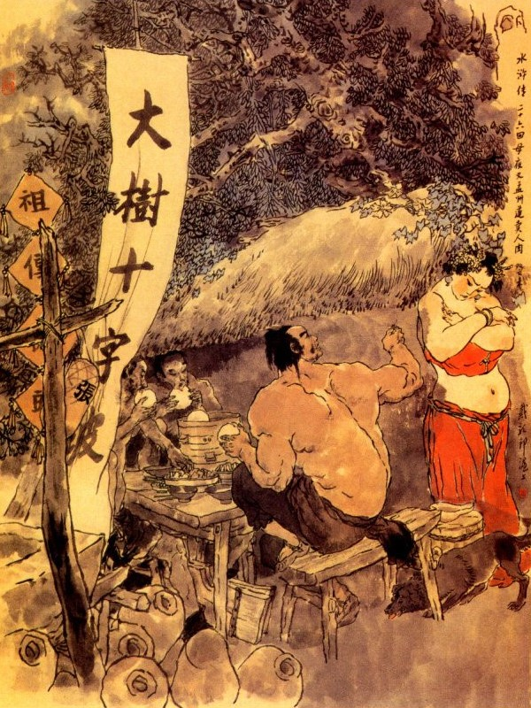
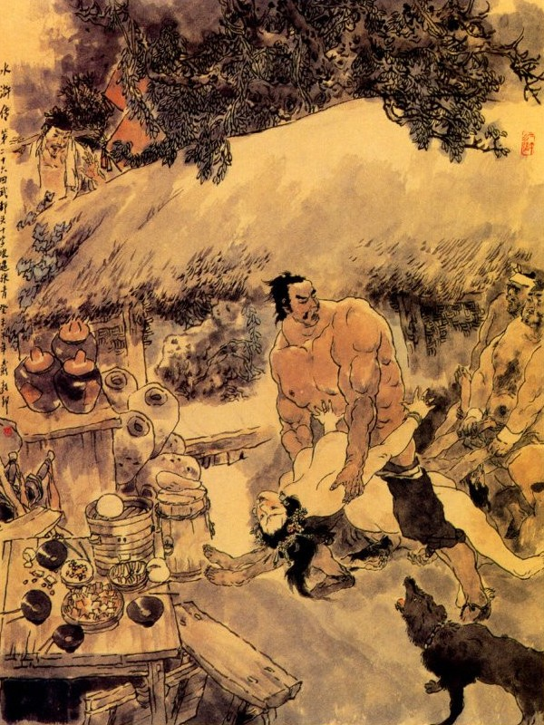
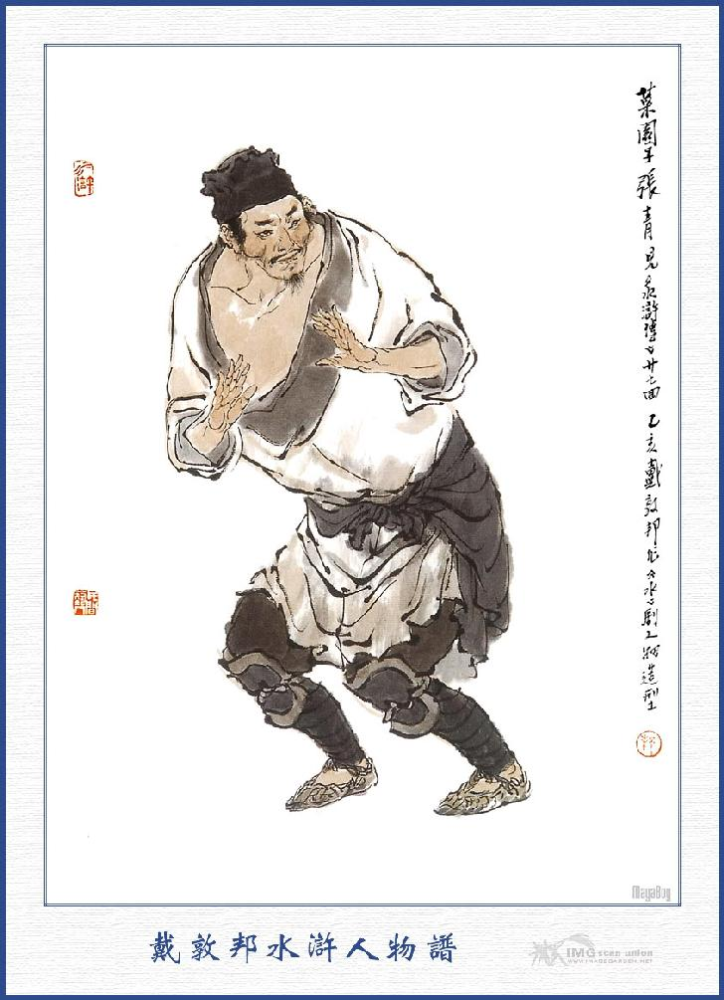
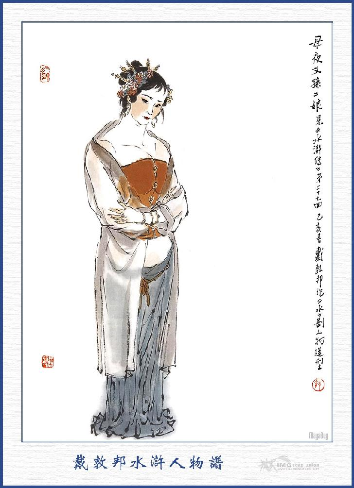

Bấy giờ Võ Tòng nói với bốn người hàng phố rằng:
- Tôi đây vì việc báo thù mà phải giết người phạm tội, thân này dẫu chết cũng cam, duy từ đây trở đi tính mệnh của tôi phỏng còn sống nữa hay không cũng chưa biết được. Vậy nhân đây tôi muốn siêu hóa các đồ thờ tự Ca Ca tôi, còn các vật liệu trong nhà thì xin nhờ các ngài đem bán giúp cho, để lấy tiền theo đòi việc kiện. Bây giờ ta sẽ vào huyện thú nhận các lễ, sau đó tội tình thế nào đã có quan trên xét đoán, duy các ngài thì cứ lấy sự thực làm chứng giúp cho.
Nói đoạn liền đem các đồ thờ tự, bài cúng vàng mã mà siêu hóa hết cả rồi lên gác lấy hai cái hòm xuống mở ra, đưa các đồ vật cho bốn người hàng phố thu nhận để bán giúp. Đoạn rồi xách hai cái đầu người và lôi cổ Vương Bà và dẫn bốn người đi thẳng vào huyện.
Hôm đó cả huyện Dương Cốc đều kéo nhau đi xem đông lắm không biết đâu mà kể. Võ Tòng đến công đường bắt Vương Bà quỳ xuống trước giữa thềm rồi chàng đặt hai cái đầu gian phu dâm phụ, cùng đặt con dao mà quỳ xuống thềm bên tả; còn bốn người hàng phố quỳ sang bên hữu dưới thềm. Võ Tòng lấy tờ giấy của Hồ Chánh Khanh viết lúc trước đem ra trình rồi kêu rõ đầu đuôi cho quan huyện nghe.
Quan huyện cũng kinh ngạc rồi sai nha lấy khẩu cung Vương Bà và lấy chứng cớ các người hàng phố rồi sai bắt Hà Cửu Thúc và Vận Kha lên, để lấy giấy chứng cớ rõ ràng một lượt. Đoạn rồi áp giải mấy người đó, cùng ra phố Tử Thạch khám nghiệm xác đứa dâm phụ và đến trước nhà tửu lâu ở dưới cầu Sư Tử để khám nghiệm xác đứa gian phu rồi đem về lập án.
Tri huyện sai lấy gông, gông Võ Tòng và Vương Bà lại, giam cả xuống ngục, còn các người kia thì tạm giữ tại phòng ngoài để chờ tra hỏi. Nguyên Tri huyện đó vốn có lòng biệt đãi Võ Tòng là người nghĩa khí đảm đang và lại nhớ đến công việc khi xưa mang các châu báu về kinh thì lại định tâm muốn tìm kế chu toàn cứu giúp, bèn gọi đám nha lại lên mà định bàn rằng:
- Võ Tòng là người nghĩa trực, xưa nay ai ai cũng biết. Duy hắn thiện tiện giết người thì không thể nào mà tha ngay được, vậy nay ta nên đem các lời cung của lân bang mà chữa đổi đi.
Chúng vâng lời, chữa các khẩu cung như sau này:
- "Võ Tòng về lễ anh người chị dâu đanh ác không cho lễ, đến nỗi đôi bên cãi nhau rồi chị dâu đạp đổ cả giường thờ giường tự, vì thế Võ Tòng đến cướp lấy bài vị của anh mà lỡ tay đánh chết. Về sau Tây Môn Khánh vốn là đứa thông dâm cùng mụ đàn bà kia chạy vào đánh hội rồi giằng co với Võ Tòng, khi đến cầu Sư Tử thì bị Võ Tòng đánh chết".
Khi chữa xong đem đọc lại cho Võ Tòng nghe rồi thảo công văn để giải phạm nhân lên phủ Đông Bình. Bấy giờ có mấy nhà nghĩa khí ở huyện Dương Cốc, nghe thấy vậy, liền đem tiền nong gạo nước để tiến tặng Võ Tòng. Võ Tòng liền xin phép quan về phòng để thu nhận các đồ hành lý và đưa mười lăm lạng bạc cho bố Vận Kha rồi sắm sửa để đi. Các thổ binh theo hầu Võ Tòng khi trước, đều đem rượu thịt đến thiết đãi luôn canh. Sau đó quan huyện phái người đem các đồ gói tiền gói xương, dao trượng, cùng mấy người phạm án, giải lên phủ Đông Bình. Khi tới phủ các dân sự chung quanh đổ ra xem rất đông đúc.
Quan phủ Đông Bình là Trần Văn Chiêu vốn là tay rất thông minh lanh lợi, nghe biết câu chuyện Võ Tòng đã lâu, nay thấy huyện Dương Cốc giải đến, liền đem các giấy má ra xem, gọi các người vào tra hỏi một lượt, cho đem các đồ hành hung cùng tang vật thu vào trong kho rồi sai đóng gông rất nặng cho mụ Vương Bà giam vào ngục tử tù, còn Võ Tòng thì đóng gông nhẹ mà giam vào nhà giam thường. Đoạn rồi giao cho huyện lại lĩnh Hà Cửu Thúc, Vận Kha cùng bốn người lân bang cho về huyện Dương Cốc. Còn vợ con Tây Môn Khánh thì giữ lại ở phủ để đợi chờ giấy Bộ tư ra rồi sẽ xét đoán. Các lính tráng ở phủ Đông Bình, thấy Võ Tòng là một người hào hiệp nghĩa khí, trên quan phủ cũng có lòng thương, nên chúng thường đem tâm vì nể, không những không dám hạch sách tiền nong mà thần thường lại khoãn đãi tử tế. Quan phủ Đông Bình đem các giấy má mà chữa đổi cho nhẹ tội Võ Tòng rồi tự đem lên trình quan tỉnh và cắt một người tâm phúc đem mật thư vào kinh sư, để lo cứu cho Võ Tòng. Bấy giờ các quan Hình Bộ cũng nhiều người thân mật với Trần Văn Chiêu, nên khi nhận được giấy thì lập tức cho các quan Tỉnh viện kết án nhẹ đi. Trong án đại khái nói:
- Cứ như mụ Vương Bà dụng tình cố ý manh mối gian dâm, xui giục đàn bà đánh thuốc độc cho chồng chết, lại khiến dâm phụ không cho Võ Tòng vào viếng thân huynh, cho đến nổi sát thương nhân mạng, tội ác nham hiểm làm cho bại hoại luân thường, tội ấy phải khép vào án lăng trì mới đáng. Võ Tòng tuy vì việc báo thù giết chết gian phu là Tây Môn Khánh, song tự mình thú tội thì giảm nhẹ tội nguyên, bắt đánh bốn mươi trượng, đày ra ngoài hai ngàn dặm. Hai đứa gian phu dâm phụ đã chết không bàn, còn các người can phạm đều tha về hết thảy.
Quan phủ Đông Bình tiếp được văn án, liền sức giấy cho Hà Cửu Thúc, Vận Kha và bốn người hàng xóm, cùng vợ con Tây Môn Khánh, đến để nghe tuyên án. Khi các người đã tề tựu cả rồi; Quan phủ sai tuyên án cho mọi người nghe rồi đâu đấy cho về an nghiệp. Đoạn rồi bắt Vương Bà ra chợ Đông Bình để hành tội, còn Võ Tòng đánh bốn mươi trượng, thích chữ vào mặt, đem đày sang đất Mạnh Châu.
Bấy giờ Diêu Văn Khanh là người hàng xóm khi trước, mới đem tiền bán các đồ đạc ở nhà mà đưa cho Võ Tòng ra trước chợ Đông Bình xem hành hình Vương Bà rồi trở về thu thập hành lý, theo hai tên công sai sang đất Mạnh Châu. Hai tên công sai vốn biết Võ Tòng là tay hảo hán, nên trong khi giải đi cũng hết lòng tử tế, không dám chút khinh nhờn. Võ Tòng thấy vậy cũng được thư lòng đôi chút, lại nhân trong túi sẵn tiền, nên mỗi khi qua hàng qua điếm, lại chè chén ăn chơi, cho hai người cùng hưởng. Từ khi Võ Tòng giết người ở huyện Dương Cốc, bấy giờ đương dạo tháng ba, sau phải theo đòi việc kiện bị giam giữ trong hai tháng trời, tới nay đày đi sang đất Mạnh Châu, thấm thoát đã tới giữa trung tuần tháng sáu. Hồi đó trời khác chi một lò lửa Tạo nung nấu đàn người, Võ Tòng cùng hai tên công sai đi ước chừng hơn hai mươi ngày, một hôm tới quãng núi kia, ba người cùng ngồi để nghỉ một lúc rồi lại đứng dậy đi xuống dưới núi, định tìm một hàng rượu để uống.
Khi qua núi chợt trông thấy đằng xa có mấy gian nhà lá, ở vào giữa khóm liễu đôi khe, thấp thoáng ngọn cờ bán rượu, Võ Tòng liền trỏ bảo hai tên công sai rằng:
- Có hàng rượu ở trước mặt kia, chúng ta mau tới đó.
Nói xong cùng kéo nhau đi được mấy bước thì gặp một anh tiều phu gánh củi đi qua, Võ Tòng đứng dừng lại hỏi rằng:
- Ở đây là xứ nào; nhờ bác bảo cho?
Tiều phu đáp:
- Con đường lên núi đây, gọi là đường Mạnh Châu cách trước mặt núi có khu rừng cây kia, gọi là Thập Tự Phi.
Võ Tòng cám ơn rồi cùng nhau kéo thẳng đến Thập Tự Phi. Khi gần tới nơi thấy cây cối um tùm, trong đó có một cây rất lớn ước chừng bốn năm vòng tay người ôm không tới, bên trên toàn thị là giây dơ leo cuốn kín mít như rừng. Đi qua gốc cây một hàng rượu, trong có một người đàn bà ngồi, mặc áo lót mình bằng sa lục, trên đầu cài cành thoa vàng lóng lánh, hai bên mái tóc giắt hai bông hoa.

Người đàn bà ấy thấy Võ Tòng cùng hai tên công sai đến cửa thì vội vàng đứng dậy, mình mặc cái quần lụa màu hồng phơn phớt, mặt bôi đầy những phấn hồng, bỏ trễ áo trước ngực lộ màu da hồng rồi chạy ra cửa nói rằng:
- Trong hàng có rượu ngon thịt béo, bánh bao tốt, xin mời các ngài ngồi nghỉ chân xơi rượu.
Ba người nghe nói bảo nhau vào ghế ngồi, dựa côn trượng vào một bên, cởi khăn gói hành lý để lên trên bàn rồi cởi cả đai nịt ra cho mát. Hai tên công sai bảo với Võ Tòng rằng:
- Ở đây không có ai biết đến, tôi xin cởi tháo gông ra, cho Đô Đầu đánh chén cho sướng.
Nói đoạn liền tháo gông ra cho Võ Tòng mà để cả lên trên bàn đó. Đoạn rồi cùng cởi cả áo xiêm ngoài mà giắt vào bên dóng cửa sổ. Bấy giờ mụ hàng miệng cười chúm chím mà bảo rằng:
- Khách quan xơi bao nhiêu rượu?
Võ Tòng đáp:
- Không cần hỏi bao nhiêu, cứ mang rượu ra đây thái ba cân thịt bò một thể rồi tôi tính trả tiền.
- Thưa ngài có bánh bao tốt.
- Mang vài mươi cái ra đây ta ăn điểm tâm.
Mụ hàng nghe nói vừa cười vừa quay vào bưng một thùng rượu lớn và lấy ba cái chén lớn, ba đôi đũa, thái hai đĩa thịt khệ nệ mang ra rồi rót bốn năm lượt rượu đưa mời khách uống. Đoạn rồi quay vào bếp bưng một quả bánh ra, để bày trên bàn. Hai tên công sai vớ được, liền nghiến ngấu ăn ngay không hỏi han gì cả.
Võ Tòng cầm lấy bánh bẻ ra xem rồi gọi mụ hàng đến mà bảo rằng:
- Bánh này làm bằng thịt người hay thịt chó?
Mụ hàng cười khanh khách đáp rằng:
- Ngài nói đùa làm gì thế? Đời này làm gì có bánh làm bằng thịt người hay thịt chó? Bánh của nhà tôi mấy đời nay đều làm bằng thịt bò cả.
- Xưa nay tôi thường đi lại đám giang hồ, từng nghe nói chỗ Thập Tự Phi này, không ai dám đến bao giờ. anh nào béo là đem giết lấy thịt làm bánh bao mà anh nào gầy là đem lấp sông ngay.
- Chết nỗi! Các ngài nghe nói ở đâu thế? Chắc rằng chỉ ngài nói đặt ra thôi.
- Đây, vì tôi thấy miếng thịt ở trong cái bánh này có mấy cái lông hơi giống như lông gì. Nên tôi càng ngờ lắm.
Nói xong lại hỏi luôn rằng:
- Nương tử ơi! Phu quân nàng sao không thấy ở đây?
- Thưa ngài đàn ông nhà tôi đi xa vắng chưa về.
- Nếu vậy nàng ở đây một mình có lẽ buồn lắm.
Mụ hàng mỉm cười trong bụng rồi nghĩ thầm: "Thằng tù này muốn chết chăng? Đến đây lại toan đùa bỡn với bà, thực là thí thân vào lửa, chả còn trách lỗi tại ai, để ta liệu cho." Mụ nghĩ vậy liền bảo Võ Tòng rằng:
- Thôi, đừng nói đùa nữa, hãy uống mấy cốc rượu rồi ra đằng sau mà nghỉ mát. Hôm nay muốn ngủ ở đây. nhà tôi cũng rộng không can gì.
Võ Tòng nghe nói đoán chắc là chị chàng này nham hiểm không vừa, liền đáp rằng:
- Nương tử ơi! Rượu này nhạt lắm, trong nhà có rượu nào tốt cho tôi mấy chén khác.
- Vâng, có rượu tốt ngon thơm hơn, nhưng chỉ vì khí đục một chút.
- Được, càng đục càng hay.
Mụ hàng cười thầm trong bụng rồi lấy một bình rượu rất đục đem ra.
Võ Tòng xem xong khen rằng:
- Ừ! Hạng rượu này mới là rượu ngon, nhưng phải hâm nóng uống mới tốt.
- Vâng, thế thì ngài sành lắm, để tôi xin đem hâm.
Nói xong cầm bình rượu quay ra, cười thầm trong bụng mà rằng: "Thằng tù này phải chết, uống thuốc mê lại đòi uống nóng, thế thì càng chóng lắm. Hôm nay may mình được món hàng tốt".
Khi hâm rượu nóng xong rót vào ba chén mang ra rồi cười mà nói rằng:
- Ngài thử nếm rượu này xem?
Hai công sai vớ được rượu thì nhắm mắt vào uống ngay. Võ Tòng lại bảo mụ hàng rằng:
- Nàng ôi! Thịt hết rồi tôi không quen uống rượu suông được, nàng thái ít thịt nữa ra đây, cho tôi nhắm rượu.
Mụ kia vâng lời quay vào. Võ Tòng liền cầm chén hắt vào tường rồi giả vờ tắc lưỡi khen rằng:
- Ngon. rượu ngon, nhưng mà bốc lắm thì phải?
Mụ hàng thấy Võ Tòng khen vậy, chắc rằng đã uống rồi, bèn không thái thịt thà gì nữa liền quay ra kêu lên rằng:
- Ngã ngã mau.
Quả nhiên mụ vừa nói xong thì hai anh công sai đờ mồm nhắm mắt rồi ngã lăn xuống đất, Võ Tòng cũng lờ đờ hai mắt rồi sau nhắm mắt chặt lại mà ngã ra bên cạnh ghế.
Bấy giờ thấy mụ hành cười ha hả mà rằng:
- Được lắm, cho bây tinh bằng ma quỷ cũng phải uống thuốc rửa chân của bà.
Nói đoạn liền gọi Tiểu Nhị, Tiểu Tam mau ra đây. Chợt thấy thằng xuẩn hán ở đâu huỳnh huỵch chạy đến, khênh hai anh công sai đi trước. Mụ hàng kia chạy đến chỗ hàng rờ vào bao phục của mọi người, thấy sẵn có tiền nong ở đó thì phá lên cười rằng:
- Hôm nay vớ được ba món hàng hoá, đủ làm bánh bao trong hai ngày nữa. Rồi lại có được tiền nong đây.
Nói xong xách cả khăn gói bao phục vào lối trong. Một lát thấy hai thằng xuẩn hán chạy ra khiêng Võ Tòng, nhưng sức yếu không khiêng nổi, nằm đường đường ở dưới đất, nghe chừng nặng tới trăm cân. Lại thấy mụ hàng kia quát lên rằng:
- Đồ chết dẫm này, chỉ biết ăn thôi, không được việc gì cả, có thế cũng phải đến bà ra tay. Thằng béo này lúc nãy lại dám đùa bỡn với bà đây. Được, nó béo thế này để làm thịt bò, còn thằng gầy kia thì làm thịt trâu cũng được. Hãy vác vào làm thịt thằng này đã.
Nói đoạn, cởi cả quần ngoài và áo ra để trần trùng trục rồi cúi xuống cắp bổng Võ Tòng lên như không vậy. Võ Tòng thừa thế ôm lấy bụng người đàn bà rồi cho hai chân xuống đánh vào khủy chân mụ kia một cái ngã ngửa hẳn ra rồi ngồi tót lên trên. Bấy giờ chị chàng ta kêu lên như cháy đồi rồi hai thằng xuẩn hán đổ xô ra, bị Võ Tòng quát cho một tiếng, anh nào anh nấy tái xanh cả mặt lại mà không dám xông vào đấy nữa. Chị chàng kia bị Võ Tòng nén chặt xuống mặt đất, không sao mà cựa được, bèn kêu van rằng:
- Xin hảo hán tha cho tôi.

Vừa hay khi đó có một chàng gánh một gánh củi, đến đâu ở cửa rồi bước vào trông thấy như thế thì kêu lên rằng:
- Xin hảo hán bớt giận, hãy tha thứ cho. tôi sẽ thưa chuyện hầu ngài.
Võ Tòng đứng phắt dậy giơ chân trái lên đạp giữ lấy người đàn bà ấy rồi nắm lấy hai tay quyền mà quay ra nom người kia. Anh chàng kia đầu chít khăn đầu rìu, mình mặc áo vải trắng, chân quấn lá đáp, đi đôi giày gai, lưng thắt dây bao, mặt dài như ba đầu ngón tay chéo, hơi lúng phún mấy cái ria vào trạc hăm nhăm hăm sáu tuổi.
Chàng ta trông thấy Võ Tòng thì khoanh tay đứng lễ phép mà nói rằng:
- Xin hảo hán cho tôi biết đại danh?
- Ta đây là Võ Đô Đầu, tên Tòng không cần chi phải dấu diếm.
- Chẳng hay ngài đánh hổ ở núi Cảnh Dương đó chăng?
- Phải.
Anh chàng kia vội thụp xuống mà đáp rằng:
- Chúng tôi nghe tiếng ngài đã lâu.
Võ Tòng hỏi:
- Có phải anh là chồng người đàn bà này không?
- Bẩm vâng. Nó ngu dại không biết gì, xin Đô Đầu tha cho.
Võ Tòng nghe nói, tha cho mụ kia dậy rồi hỏi rằng:
- Ta trông vợ chồng nhà anh cũng không phải người vừa, tên họ là chi, xin cho được biết?
Chàng chưa kịp trả lời, vội bắt vợ ăn mặc tử tế, để ra bái tạ Đô Đầu trước. Chị chàng kia bái tạ, Võ Tòng liền xin lỗi rằng:
- Vừa rồi trót lỡ không biết, xin tẩu tẩu tha lỗi cho.
Chị chàng kia cũng khiêm tốn mà rằng:
- Đó là lỗi tại tôi không được biết ngài, xin bá bá bỏ qua đi cho, xin mời bá bá hãy ngồi vào chơi đã.
Võ Tòng lại hỏi:
- Hai bác tên họ là chi, sao lại biết tên tôi?
Chàng kia đáp:
- Tôi họ Trương tên Thanh, trước coi chùa Minh Quang ở gần đây, sau vì tranh cãi một việc nhỏ, tôi nóng tiết giết sư ở chùa ấy rồi cho, một nắm lửa mà thiêu hóa cả chùa. Dần dần không thấy quan tư động đến, bèn đến lẩn lút ở gốc cây đây, để bóc lột kiếm ăn. Chợt một hôm có một lão già gánh một gánh qua đây, tôi khinh ông ta già yếu, nhảy ra đánh nhau tới hai mươi hiệp rồi bị ông ta đánh ngã. Nguyên ông cụ ấy khi còn trẻ vẫn chuyên về một mặt ăn sương, nhân thấy tôi là một người nhanh nhẹn, bèn mang tôi về cùng ở trong thành dạy các ngón võ nghệ rồi đem con gái gả cho, tức là vợ tôi bây giờ ở đây. Tôi ở đó được ít lâu không tiện, lại phải quay về đây làm mấy gian nhà lá bán hàng kiếm ăn. Thỉnh thoảng khách thương qua lại, có món nào khá thì đánh thuốc mê cho chết rồi lấy thịt mà làm thịt bò và làm bánh mà gánh đi các nơi mà bán. Chúng tôi cũng kết nạp được nhiều hảo hán giang hồ, thường gọi tôi là Thái Viên Tử Trương Thanh, còn đàn bà nhà tôi vốn người họ Tôn, thuở nhỏ cũng học được ít nhưng võ nghệ của phụ thân, người ta thường gọi là Mẫu Dạ Xoa Tôn Nhị Nương. Trước đây tôi vẫn dặn đàn bà ở nhà rằng: Có ba hạng người không nên hại đến: thứ nhất là các tăng đồ đạo nhân, vốn không can thiệp gì đến việc đời thì không hại đến; dè đâu một hôm xuýt hại một người kinh thiên động địa là Lỗ Đạt, trước làm Đề Hạt dinh Kinh Lược phủ Diên An, sau vì đánh chết anh Trấn Quan Tây, phải trốn lên Ngũ Đài Sơn để đầu phật. Nhân ông ta có thích hoa lên cánh vai, nên vẫn gọi là Hoa Hòa Thượng, nặng tới sáu mươi cân. Một hôm qua đây đàn bà nhà tôi thấy to béo, liền cho thuốc mê để thịt. May sao sắp hạ thủ thì tôi về nhà, trông thấy cây thiền trượng, biết ngay bèn đem thuốc cứu tỉnh lại rồi bái làm anh em. Mới đây nghe nói ông ta chiếm chùa Bảo Chân ở núi Nhị Long, cùng một ông là Thanh Diện Thú Dương Chí là Đầu Lĩnh ở đó, đã mấy lần ông ta gửi thư đến đây, bảo tôi cùng đi, nhưng không thể nào mà đi được.
Võ Tòng nói:
- Phải, hai người ấy, tôi cũng thường nghe tiếng xưa nay.
Trương Thanh tiếp luôn rằng:
- Tôi rất tiếc một ông đầu đà, người cao lớn tới bảy tám thước cũng đánh thuốc mê mà chết mất. Khi tôi về thì đã xả chân tay ra rồi, chỉ còn để lại một cái mũ nhà sư bằng sắt; một bức áo sóng tràng đen và một tờ hộ điệp ở đây. Những cái ấy không can hệ, duy có hai thứ rất hiếm có trên đời, đây là một chuỗi hạt làm bằng một trăm linh tám cái xương đỉnh đầu của người và hai thanh giới đao làm bằng một thứ sắt tuyết hoa rất tốt. Tay đàn đà ấy nghe chừng giết người cũng nhiều, nên bây giờ khẩu giới đao ấy, vẫn cứ đêm đêm kêu lên thành tiếng. Tôi tiếc không cứu được nên trong lòng vẫn cứ áy náy đến giờ. Thứ hai là những kỹ nữ giang hồ thì không nên làm hại, vì bọn họ lưu lạc khắp các nơi thành thị thôn dã, gặp đám ra trò, phí tổn biết bao tâm cơ mới kiếm được đồng tiền, nếu giết họ thì họ đồn đại đi khắp mọi nơi mà kiếm lời lên chốn hý đài để chế giễu giang hồ hảo hán là không ra gì, còn hạng thứ ba là các người tù tội đi đày. Trong đám ấy phần nhiều là các tay hảo hán, không nên giết hại làm chi! Ba điều đó tôi thường dặn dò kỹ lưỡng xưa nay, dè đâu đàn bà nhà tôi lại không chịu y lời như vậy. Hôm nay nếu tôi chậm về thì làm sao được gặp Đô Đầu nữa?
Người đàn bà đáp rằng:
- Bản tâm tôi cũng không định hạ thủ, nhưng một là thấy đồ hành lý của bá bá, nghe chừng hơi nặng, hai là quái lạ cho bá bá lại đem lời đùa giỡn, nên mới sinh lòng như vậy.
Võ Tòng nói:
- Tôi đây là một người chỉ chém đầu đẫm huyết, còn khi nào nói đùa bỡn với đàn bà! Nhân thấy Tẩu tẩu có ý muốn dòm dỏ đồ hành lý của tôi, nên tôi phải bày kế như thế để thử xem. Sau tẩu tẩu rót ra ba chén rượu thuốc thì tôi đổ đi ngay rồi giả vờ làm trúng độc dè đâu tẩu tẩu làm hại tôi thực.

TRƯƠNG THANH

TÔN NHỊ NƯƠNG
Trương Thanh nghe nói cả cười, liền mời Võ Tòng vào phòng khách phía trong ngồi chơi. Võ Tòng nói với Trương Thanh xin cứu hai người công sai ấy dậy. Trương Thanh lại dẫn Võ Tòng vào nhà làm thịt, thấy trên vách căng mấy cái da người, trên sà nhà treo dăm bảy cái đùi người, còn hai tên công sai thì nằm vật ở trên ghế mổ.
Bấy giờ Trương Thanh hỏi Võ Tòng, vì việc gì mà phải đi đày qua đó? Võ Tòng liền đem nguyên ủy chuyện mình nói cho hai vợ chồng Trương Thanh biết. Hai người nghe nói đều vui mừng kinh sợ mà rằng:
- Chúng tôi muốn thưa câu chuyện này, chẳng hay Đô Đầu nghĩ sao?
Võ Tòng đáp: Chẳng hay chuyện gì, đại ca cứ nói, tôi xin sẵn lòng để nghe.
Thực là:
Dây đâu treo nổi địa cầu?
Đất đâu lấp bể màn đâu che trời?
Đã mang tiếng ở trên đời,
Anh tài phải biết anh tài mới hay,
Cuộc đời còn lắm tỉnh say,
Còn cơn sóng cả còn tay vững chèo!
Kiền khôn là thứ tiêu dao,
Càng nhưng lưu lạc càng nhưng kiến văn,
Trăm năm trong cõi hồng trần,
Những tay khan tế kinh luân thế nào?
Lời bàn của Thánh Thán
Tả xong câu chuyện Võ Tòng giết chị dâu, tiếp tả Trương Thanh bán thịt người, toàn là những chuyện kinh thiên động địa, khấp quỷ kinh thần, tác giả khéo diễn ra những tình tiết ly kỳ, không phải ngọn bút thường mà tả nổi, không phải lòng văn thường mà tưởng tượng nên! Trương Thanh thuật chuyện Lỗ Đạt ngộ độc, lại thuật luôn chuyện đầu đà, theo phép hư tả, song lẽ Lỗ Đạt là thực, vì còn người, đầu đà là hư vì đã mất, trong khi thuật chuyện đầu đà lại có di vật làm thực mà Lỗ Đạt ở đâu đâu thì lại ra hư, trong thực có hư, trong hư có thực, đều theo bút pháp diễn tả, cho rõ từng ý nghĩa của đoạn văn. Sách này mỗi khi tả gặp kẻ kỳ tài, lại mất một tay kỳ tài khác cho rõ ngoài vòng vơ vét về sơn bạc, lại có con người dị dạng, đầu tiên đã mất một Vương Tiến, hồi này mất một đầu đà, sau đả Chúc Gia Trang, lại mất một Loan Đình Ngọc. Hỡi ôi danh lưu sách sử cũng có người may với kẻ không may, kẻ thành danh muôn thuở, đừng vội bảo rằng: Ngoài đám trai kia không có ngọc châu!